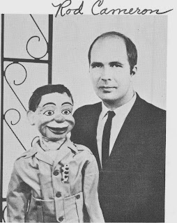

A Dummy Goes To Africa
10/24/2010
{kind=link}

I'm offering a vintage book for give-away today: "A Dummy Goes To Africa", by Rod Cameron. Published 1962. To explain the content of this book, I'm printing below an excerpt from the Introduction, "written" by Rod's dummy, "Gabby":
"This is Gabby, Rod's alter ego, speaking. I wanted to write the whole book, but Rod wouldn't let me. There have been many (at least two) requests for this book. It deals with Rod's early life (no requests for that), with my own beginnings (the best part of the book), and most of all, the missionary work of the Camerons with the Batonga tribe of the wild Zambezi Valley - the most primitive tribe in Central Africa.
"The Camerons have had some interesting, exciting, and never-to-be-repeated (thank heaven) experiences working among these people. So, in a sense, this is a 'missionary diary'. The name of the book may be misleading. It isn't named for me. You see, a dummy is one who does not speak for himself, but another speaks through him. Rod is trying to be a dummy for the Lord - 'determined not to know anything among you, save Jesus Christ, etc.' It's a good ambition.
"Lastly, this book is dedicated to the proposition that Christianity is fun, and that missionaries are people, too. The job's been hard, but we've had fun; and we hope you will have fun reading about it, too."
* * * * *
This is a hardcover book of nearly 300 pages and was provided as a gift for today's drawing by George Boosey. Knowing the theme of this book is of greater interest to some than others, I held a one day special drawing for this item. And the winner of that drawing is: Lisa Laird.